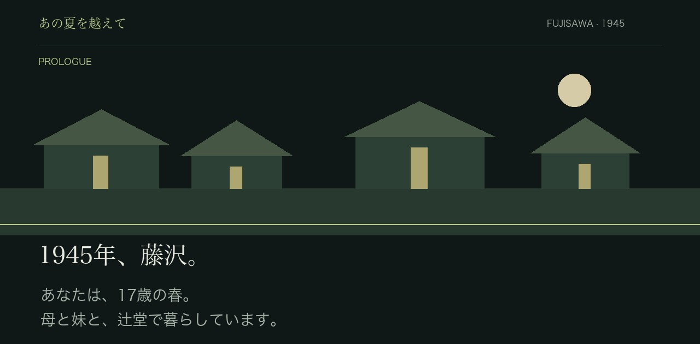

物語を読み込んでいます。
資料を開いている間、物語は止まっています。
1945年の藤沢を舞台にした、主人公一人の選択ゲームです。春は母・ふみ、妹・千代と暮らす架空の少女です。旧作品に登場する人物の実話や続編ではありません。
場所と確認できる歴史上の出来事を土台にしています。人物・会話・私的な事故・日々の日付・戦後の暮らしは創作です。画面の「資料」で、歴史の記録と物語を分けています。
大きな結末は、生き延びたあとの仕事4種類と病気による死の1種類です。家族がどこで暮らすかは、後日談に反映されます。病気の経過は創作で、実際の患者の転帰を予測するものではありません。
物語は自動で進みます。選ぶのは重要な6場面だけで、選ぶまで必ず止まります。持ち物や情報によって、その間の出来事も変わります。「一時停止」「読む速さ」「次へ」で、自分のペースに合わせられます。別のタブや資料を開いている間は進みません。
進行はこのブラウザに保存します。この版は物語と一部の分岐を改めたため、以前の版とは別の進行として最初から始まります。以前の保存データは消していません。「最初から」で今回の進行を消してやり直せます。過去のプレイ記録は別に蓄積しません。
オープニングの4枚（G1〜G4）と本編の背景（G5）は、本作用にプログラムで描いた創作の図です。当時の写真や、実際の街並みを正確に復元した画像ではありません。地域案内図（G6）も、本作用に描いた概略図です。
画像・地図の一覧と制作方法 ／ 旧版で使用した写真の出典・撮影者・利用条件
体験設計の参考：80億分の1。文章と画面は本作向けに制作。設計はChatGPTとClaudeのレビューをもとに構成しています。
このプレイの進行と記録を消し、4月6日から始めます。
画像は本作用に描いた創作の図です。画像の説明・出典一覧 ↗
4枚の画像で、舞台と遊び方をご案内します。自分のペースで読み進めてください。
